Σε αυτό το δωρεάν μάθημα Java, θα δούμε την εγκατάσταση του NetBeans
και θα γράψουμε το πρώτο μας ολοκληρωμένο Java πρόγραμμα. Έχουμε
αρκετά βήματα να αναλύσουμε οπότε ας ξεκινήσουμε.
Η εγκατάσταση του NetBeans είναι πολύ εύκολη γιατί πολύ απλά
αυτό που πρέπει να κάνουμε είναι να κατεβάσουμε το zip αρχείο της
τελευταίας έκδοσης
(https://netbeans.apache.org/download/nb111/nb111.html ) και
να το κάνουμε unzip.

Αφού κάνουμε unzip το αρχείο, πάμε στο φάκελο bin και κάνουμε
double click στο netbeans64 application αν το
λειτουργικό σας είναι 64 bit ειδάλλως τρέχετε το netbeans.

Για να τρέξει το NetBeans, χρειάζεται να βρει μια ήδη εγκαταστημένη έκδοση
της Java. Αυτός είναι άλλωστε ο λόγος που στην προηγούμενη ενότητα
(ΕΝΟΤΗΤΑ 1 ) δείξαμε τα βήματα εγκατάστασης της Java 13.
Λογικά λοιπόν, αν έχετε κάνει όλα τα προηγούμενα βήματα
σωστά, το NetBeans θα ξεκινήσει και θα εμφανιστεί το κύριο μενού
μέσα από το οποίο θα μπορέσουμε να δημιουργήσουμε τα προγράμματα μας.
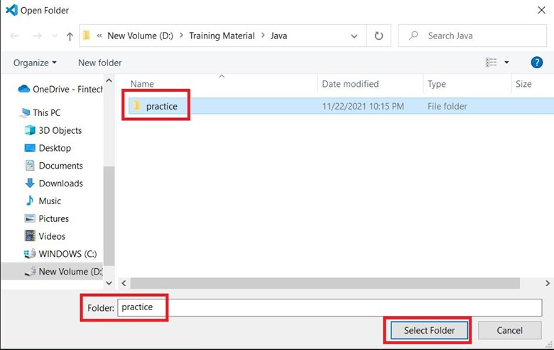
Κάνουμε κλικ στο File και επιλέγουμε New Project.
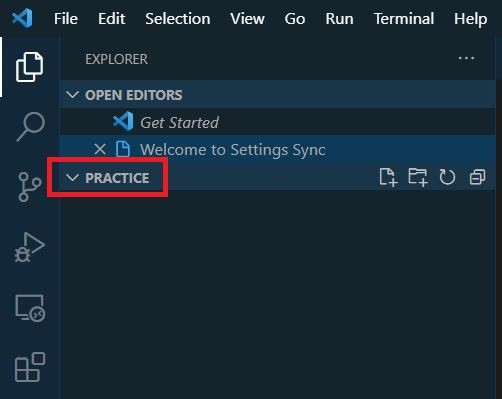
Στο καινούργιο παράθυρο που εμφανίζεται μας δίνεται η δυνατότητα
να δημιουργήσουμε ένα Java Application με τρεις διαφορετικούς
τρόπους: Java with Maven, Java with Gradle και Java with Ant.
Ο σωστός και επαγγελματικός τρόπος είναι να δημιουργήσουμε την
εφαρμογή μας με την χρήση του Maven. Αλλά επειδή χρειάζεται να
γνωρίζεται κάποια πράγματα για το Maven πριν προχωρήσουμε στην
Java, ας κρατήσουμε τα μαθήματα μας όσο πιο απλά γίνεται για να
μην μπλέξουμε πολλές τεχνολογίες μαζί. Για να μην σαν μείνει η
απορία όμως, χτίζοντας ένα Java Application με Maven σημαίνει ότι
ορίζουμε τι βιβλιοθήκες που χρειάζεται το project μας για να τρέξει
σωστά σε ένα αρχείο με το όνομα pom.xml και το maven τις κατεβάζει
από το Maven repository και τις ενσωματώνει στην εφαρμογή μας. Ενώ
με το τρόπο που έχουμε επιλέξει, πρέπει όλες οι βιβλιοθήκες να έχουν
ενσωματωθεί από εμάς στο project. Επειδή όμως η σειρά δωρεάν μαθημάτων
που αναφέρονται στην Java δεν χρειάζονται καμία επιπλέον βιβλιοθήκη
πέραν της Java οπότε είμαστε απόλυτα καλυμμένοι. Τώρα όσον αφορά το
Maven το ίδιο, θα υπάρξουν δωρεάν μαθήματα αφιερωμένα αποκλειστικά
σε αυτό οπότε θα αποκτήσετε τις απαραίτητες γνώσεις για να χτίζετε
Java applications χρησιμοποιώντας Maven.
Πίσω λοιπόν πάλι στην θεωρίας μας. Διαλέγουμε από τα
Categories την επιλογή Java with Ant και από τα projects Java Application.
Κάνουμε κλικ στο File και επιλέγουμε New Project.
Θα έχετε ήδη παρατηρήσει ότι οι επιλογές κάτω από τα Projects
είναι με χρώμα γκρι (disable). Ο λόγος είναι επειδή
το NetBeans δεν έχει ενεργοποιήσει ακόμα την δυνατότητα
του να δημιουργεί Java εφαρμογές. Μόλις ολοκληρώσουμε την
διαδικασία οι επιλογές θα μείνουν ενεργοποιημένες. Κατά
την διάρκεια αυτής της διαδικασίας ενεργοποίησης θα
εμφανιστούν και κάποια έξτρα παράθυρα που θα μας
πληροφορήσουν ότι κάποιες έξτρα βιβλιοθήκες χρειάζονται
να κατέβουν από το site του Apache NetBeans για να λειτουργήσει
σωστά το NetBeans. Πρέπει να εγκρίνουμε όλες τις επιλογές.
Αυτή θα είναι η μοναδική φορά που θα εμφανιστούν αυτές οι
επιλογές. Μετά την εγκατάστασή τους, απλά θα δημιουργείτε
ένα project. Πατάμε λοιπόν Next στο παράθυρο που έχουμε ανοιχτό ακόμα.
Η αμέσως επόμενη επιλογή είναι να κατεβάσουμε
κάποια επιπλέον modules του NetBeans.
Πατάτε Download and Activate.
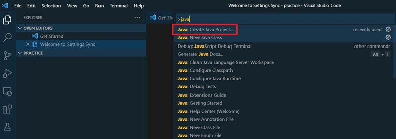
Θα εμφανιστεί ένα ακόμα παράθυρο που θα μας ζητήσει
την εγκατάσταση της nbjavac Library. Το δεχόμαστε και πατάμε Next.
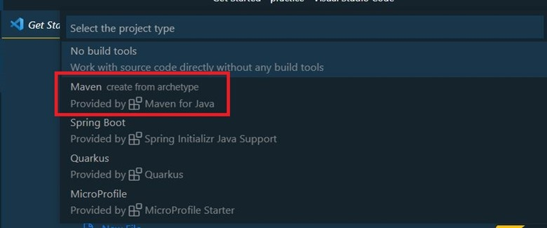
Δεχόμαστε τους όρους του License Agreement και πατάμε Install.
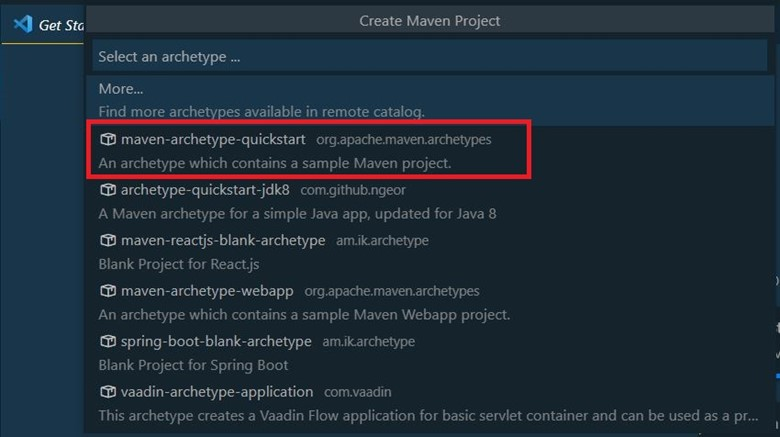
Μετά το τέλος της εγκατάστασης πατάμε Finish.
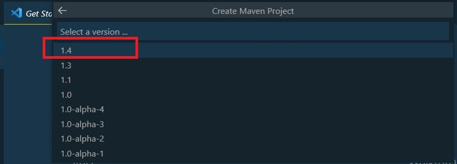
Αφού έγινε η εγκατάσταση του nbjavac Library
αρχίζει η ενεργοποίηση της δυνατότητας του NetBeans να
δημιουργεί Java εφαρμογές. Όταν ολοκληρωθεί η ενεργοποίηση πατήστε Next.
Το επόμενο παράθυρο μας ζητάει να δώσουμε ένα όνομα στο Project μας.
Δίνουμε ένα απλό όνομα (το δικό μου το έχω ονομάσει ActivationExample)
και βεβαιωνόμαστε ότι κανένα από τα checkboxes δεν είναι τσεκαρισμένο. Πατήστε Finish.

Σε λίγα δευτερόλεπτα βλέπουμε να έχει δημιουργηθεί ένα project
κάτω από το tab projects, ενώ έχουν εμφανιστεί ακόμα
δύο tabs με τα ονόματα Files και Services. Τα δύο αυτά
tabs δεν θα μας απασχολήσουν τόσο, αλλά το Projects tab
είναι εκείνο που θα μας δείχνει την λίστα με τα projects που
έχουν δημιουργήσει.
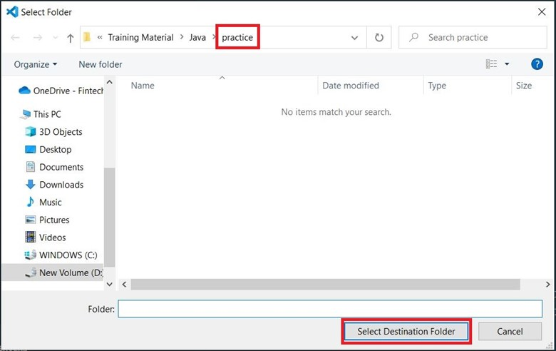
Τώρα που δημιουργήθηκε το πρώτο μας Project, την επόμενη φορά
που θα επιλέξετε να το ξανακάνετε θα σας εμφανιστούν μόνο δύο
παράθυρα – εκείνο της επιλογής της Java with Ant και το δεύτερο
θα είναι εκείνο που θα μας ζητάει να ονομάσουμε το Project μας.
Μπορείτε αν θέλετε να δημιουργήσετε ένα δεύτερο project τώρα και
να επαληθεύσετε την διαδικασία.
Ο βασικός λόγος που δημιουργήσαμε ένα project java είναι
γιατί το χρειαζόμαστε. Κάθε εφαρμογή java θα είναι και ένα
αυτόνομο Project. Ο λόγος είναι ότι κάθε project μπορεί να
χρειάζεται έξτρα βιβλιοθήκες, configuration αρχεία, πολλαπλές
κλάσεις java που όλα αυτά μαζί συνθέτουν μια ολοκληρωμένη εφαρμογή.
Αυτή την έννοια έχει το project – να βάζει όλα τα resources που
χρειάζεται η εφαρμογή μας, μαζί.
Οπότε το πρώτο βήμα πάντα είναι να δημιουργήσουμε ένα Java Project.
Σαν δεύτερο βήμα, πρέπει να δημιουργήσουμε ένα πακέτο. Όταν αργότερα
τα προγράμματα μας θα αποτελούνται από περισσότερα από ένα
αρχείο (κλάσεις), τα πακέτα θα μας φανούν χρήσιμα για να μπορέσουμε
να ομαδοποιήσουμε κλάσεις που αναφέρονται σε κάποια κοινή λειτουργία.
Για παράδειγμα σε ένα πακέτο μπορούμε να έχουμε όλες τις κλάσεις
που συνεργάζονται από κοινού για να δώσουν networking δυνατότητες
στην εφαρμογή, ενώ σε κάποιο άλλο πακέτο ίσως έχουμε όλες τις κλάσεις
που αναφέρονται σε επικοινωνία της εφαρμογής σε κάποια βάση. Κάνουμε
λοιπόν δεξί κλικ επάνω στο source Packages και επιλέγουμε New Java Package.

Ας δώσουμε ένα όνομα στο πακέτο. Στο δικό μου παράδειγμα το ονομάζω hello. Πατήστε Finish.


Έχοντας αυτή την δομή έτοιμη, μπορούμε να δημιουργήσουμε
την πρώτη μας Java κλάση. Η Java εξ αρχής δημιουργήθηκε σαν
αντικειμενοστραφής γλώσσα προγραμματισμού. Αυτό σημαίνει ότι
όποιο κώδικα και αν γράψουμε (σύνθετο ή πολύπλοκο) πρέπει να
βρίσκεται μέσα σε μια ή και περισσότερες κλάσεις. Από την κλάση,
όπως θα μάθουμε αργότερα, θα μπορούμε να παράγουμε και αντικείμενα.
Κάνουμε λοιπόν δεξί κλικ επάνω στο πακέτο hello και επιλέγουμε New Java Class.
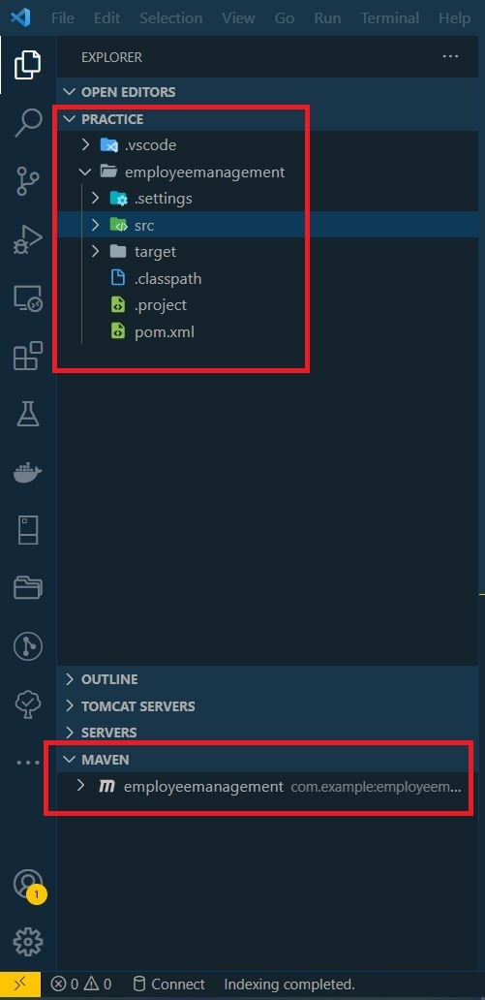
Ας ονομάζουμε την κλάση μας HelloClass και ας πατήσουμε Finish.

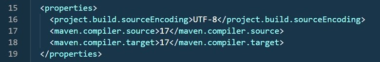

Ας δούμε τι έχουμε δημιουργήσει μέχρι τώρα στον
κώδικα μας. Στην πρώτη γραμμή δηλώνεται το πακέτο στο οποίο ανήκει η κλάση.
Αμέσως μετά έχουμε τον ορισμό της κλάσης. Η λέξη κλειδί class ορίζει
ότι το όνομα HelloClass είναι κλάση και ο κώδικας που θα ανήκει
σε αυτήν ορίζεται από τα άγκιστρα ( { } ). Η λέξη κλειδί public
μπροστά από το class δηλώνει ότι άλλες κλάσεις ή η Java η ίδια,
μπορεί να καλέσει μεταβλητές και μεθόδους που έχει να προσφέρει η
κλάση. Αυτή είναι η πιο βασική αλλά και συγχρόνως η πιο απλή λειτουργική
μορφή μιας κλάσης.
Σκοπός αυτού του απλού παραδείγματος είναι να μπορέσουμε
να τρέξουμε μια πολύ απλή και μικρή εφαρμογή και να εμφανιστεί
ένα μήνυμα στην κονσόλα του NetBeans που αντιπροσωπεύει και την
cmd κονσόλα των Windows.
Όμως μια κλάση από μόνη της δεν κάνει μια εφαρμογή εκτελέσιμη.
Αυτή την δυνατότητα την αποκτάει η κλάση όταν συμπεριλάβει
μια δυναμική μέθοδο που προσφέρει η Java και ονομάζεται main.
Ας δούμε τώρα πως έχει αλλάξει ο κώδικας μας μετά την προσθήκη της main μεθόδου.
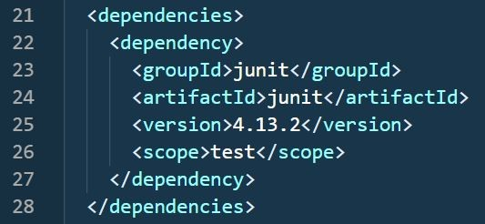
Μια μέθοδος, όπως η main, έχει όνομα που ακολουθείται
από παρενθέσεις, για να μπορέσουμε να περάσουμε τιμές στην
μέθοδο αν επιθυμούμε, και ο κώδικας της περικλείεται από
άγκιστρα όπως και της κλάσης. Η έννοια της μεθόδου είναι
απίστευτα χρήσιμη στην Java γιατί ο κώδικας που περικλείεται
μέσα στην μέθοδο, μπορεί να εκτελεστεί καλώντας το όνομα της
μεθόδου όσες φορές θέλουμε και από όπου θέλουμε. Όποτε
μπορείτε να καταλάβετε την αξία της μεθόδου όταν μεγάλος
αριθμός κώδικα μπορεί να εκτελεστεί καλώντας μόνο το όνομα
της μεθόδου στην οποία ανήκει ο κώδικας. Επειδή όμως μια
μέθοδος δεν μπορεί να υπάρξει μόνη της σαν κώδικας, για αυτό
πάντα ανήκει σε μια κλάση. Η main( ) όμως είναι μοναδική για
την Java γιατί δίνει την ικανότητα στην κλάση και κατά συνέπεια
στην εφαρμογή να γίνει εκτελέσιμη. Τι εννοούμε εκτελέσιμη?
Εννοούμε ότι κώδικας γραφτεί μέσα στην main( ) μέθοδο θα εκτελεστεί.
Εμείς αυτό που ζητάμε είναι απλά να εμφανίσουμε ένα μήνυμα
στην κονσόλα οπότε πρέπει να γράψουμε τον κώδικα μας μέσα στην main( ).
Ας γράψουμε τώρα ολοκληρωμένο το πρόγραμμα μας και ας το εξηγήσουμε.
package hello;
public class HelloClass {
public static void main(String args[]){
System.out.println("Hello World and Welcome to Kassapoglou Site");
}
}
Το απλό πρόγραμμα μας ξεκινάει ορίζοντας το πακέτο hello
μέσα στο οποίο ανήκει η κλάση HelloClass. Για να οριστεί
επίσημα μια κλάση πρέπει να υπάρχει η λέξη class πριν
το όνομα της. Ολόκληρος ο κώδικας της κλάσης περιέχεται
μέσα σε άγκιστρα. Επειδή μιλάμε για αντικειμενοστραφή
προγραμματισμό (object-oriented), η χρήση έστω μιας
κλάσης είναι απαραίτητη. Η λέξη public μπροστά από την
κλάση επιτρέπει σε άλλες κλάσεις ή εφαρμογές να αποκτήσουν
πρόσβαση στις μεθόδους της και στις μεταβλητές της. Αυτή
η έννοια θα γίνει ακόμα πιο σαφής όταν μιλήσουμε για αντικείμενα.
Μια κλάση από μόνη της δεν κάνει ένα Java πρόγραμμα εκτελέσιμο.
Αυτό μπορούμε να το πετύχουμε αν προσθέσουμε την μέθοδο main.
Η συγκεκριμένη μέθοδος είναι η αρχή εκτέλεσης κάθε προγράμματος Java.
Η λέξη public με την οποία ξεκινάει ο ορισμός της επιτρέπει στην
Java να αποκτήσει πρόσβαση σε αυτήν και να ξεκινήσει η εκτέλεση της.
Η λέξη static επιτρέπει την εκτέλεση της μεθόδου χωρίς πρώτα να
χρειαστεί να δημιουργήσουμε αντικείμενο από την κλάση στην οποία
περιέχεται. Η λέξη void ενημερώνει την Java ότι η συγκεκριμένη
μέθοδο δεν θα επιστρέψει τίποτα πίσω στο πρόγραμμα. Με άλλα λόγια
εκτελεί κώδικα ή δείχνει μηνύματα στην κονσόλα αλλά δεν περιμένουμε
κάποιο αποτέλεσμα πίσω το οποίο θα χρησιμοποιήσουμε για
συνεχίσουμε με κάποιες άλλες πράξεις. Η λέξη main() (μαζί
με τις παρενθέσεις) ορίζει το όνομα της και την ιδιότητα της
ότι είναι μέθοδος. Μέσα στην παρένθεση ορίζεται ένας String
πίνακας σε περίπτωση που θέλουμε να περάσουμε κάποιες τιμές
στην εφαρμογή πριν την εκτέλεση της. Τέλος τα άγκιστρα ορίζουν
τον κώδικα που θα εκτελέσει η main.
Η πιο πάνω εξήγηση μπορεί αυτή τη στιγμή να ακούγεται
κάπως δύσκολη να την κατανοήσετε, αλλά όταν προχωρήσουμε
στην θεωρία μας, κάθε μια από τις πιο πάνω λέξεις κλειδιά της
Java στις οποίες αναφερθήκαμε θα ξεκαθαρίσει γιατί πολύ
απλά θα τις χρησιμοποιήσετε και εσείς σε δικό μας κώδικα.
Για τώρα απλά κρατάμε το γεγονός ότι έχουμε μια κλάση μέσα
σε ένα πακέτο και χρειαζόμαστε τον ορισμό της main μεθόδου
(ο οποίος δεν αλλάζει) μέσα στην κλάση για να τρέξουμε τον
κώδικα μας.
Τέλος, έχουμε το System που είναι μια στατική
κλάση που παράγει ένα αντικείμενο out στο οποίο
ανήκει μια μέθοδο που ονομάζεται println( ). Ότι
βάλουμε μέσα στην println( ) μέθοδο θα εκτυπωθεί
στο terminal γιατί το default output του System.out
αντικειμένου είναι η κονσόλα.
Πριν τρέξουμε τον κώδικα μας, θα πρέπει να ξέρετε ότι η Java
είναι case-sensitive που σημαίνει ότι έστω και ένα
χαρακτήρα να αλλάξουμε στα ονόματα των κλάσεων, μεθόδων
ή μεταβλητών τότε η Java θα θεωρήσει ότι αναφερόμαστε
σε ένα καινούργιο στοιχείο. Για παράδειγμα μπορούμε να
δημιουργήσουμε μια κλάση με το όνομα HelloClass και μια
ακόμα με το όνομα helloClass.
Για να τρέξουμε την εφαρμογή μας, δεν έχουμε παρά
να κάνουμε δεξί κλικ επάνω στο ActivationExample
Application και να επιλέξουμε Run.
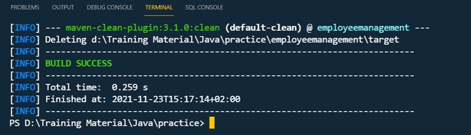
Το project αναζητάει την κλάση που περιέχει την main μέθοδο. Επειδή
την έχει βρει ήδη μας ρωτάει αν θέλουμε να την καλέσουμε.
Πατάμε ΟΚ και η εκτέλεση του προγράμματος ολοκληρώνεται.
Το Output section ανοίγει στο κάτω μέρος της οθόνης και μας
δείχνει το αποτέλεσμα. Το Output παράθυρο γενικότερα
στο NetBeans αντιπροσωπεύει την κονσόλα των Windows (CMD ή
του εκάστοτε λειτουργικού συστήματος) σαν να είχατε τρέξει
το πρόγραμμα μέσα από το terminal.
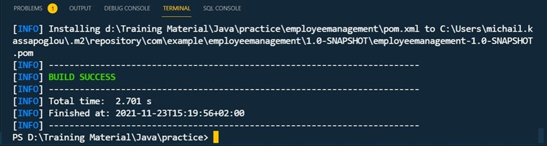
Αν δεν έχει ανοίξει το Ouput μπορείτε να το ανοίξετε πατώντας Ctrl + 4.
Αυτό το εύκολο σε εκτέλεση και λειτουργία πρόγραμμα περιέχει πολύ θεωρία
που δεν μπορούμε ακόμα να αναλύσουμε σε βάθος γιατί πολύ απλά είναι πολύ
νωρίς για να μιλήσουμε για όλη την θεωρία του object-oriented
προγραμματισμού. Αν κάποιους ορισμούς που χρησιμοποιήσαμε δεν
σαν είναι εντελώς ξεκάθαροι, μην ανησυχείτε γιατί θα επιστρέψουμε
σε αυτούς πολλές φορές στα επόμενα προγράμματα μας. Για τώρα
απλά κρατάμε τα εξής:
- Η Java είναι case sensitive
- Το πιο απλό πρόγραμμα χρειάζεται την δημιουργία μιας κλάσης
- Για να είναι εκτελέσιμη η κλάση και κατά συνέπεια η εφαρμογή μας χρειαζόμαστε την main( ) μέθοδο.
- Η γραμμή που ορίζει την main( ) θα παραμείνει πάντα η ίδια για όλα τα προγράμματα.
- Για να δείξουμε μηνύματα στην κονσόλα, χρησιμοποιούμε την println( ) μέθοδο.